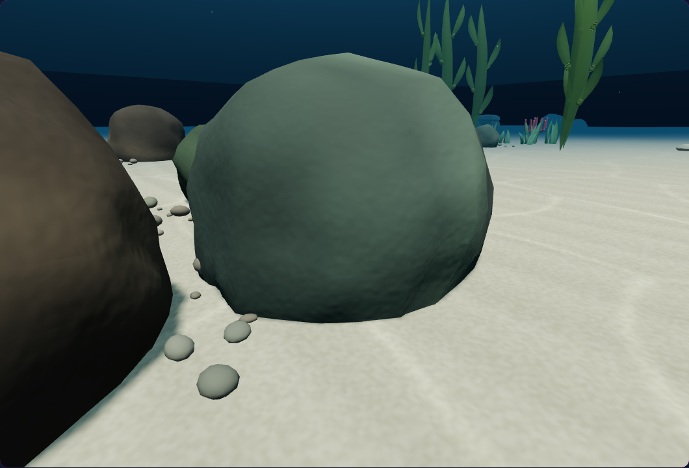
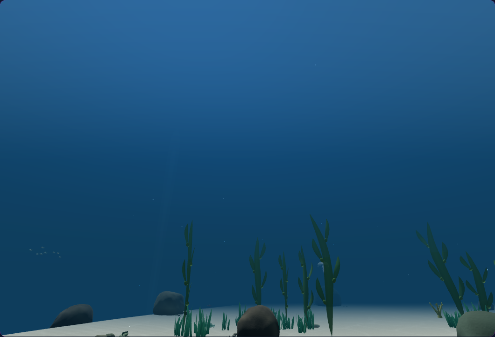
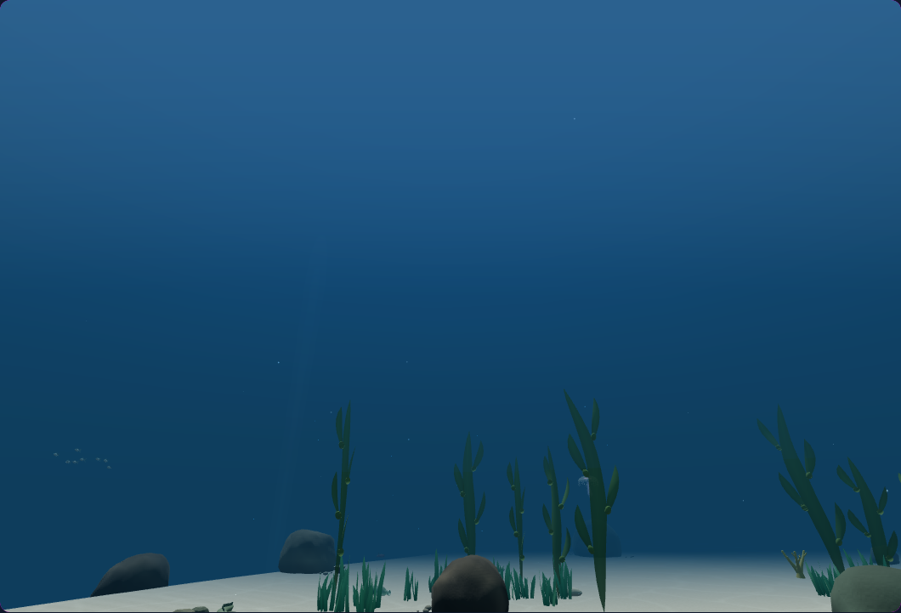
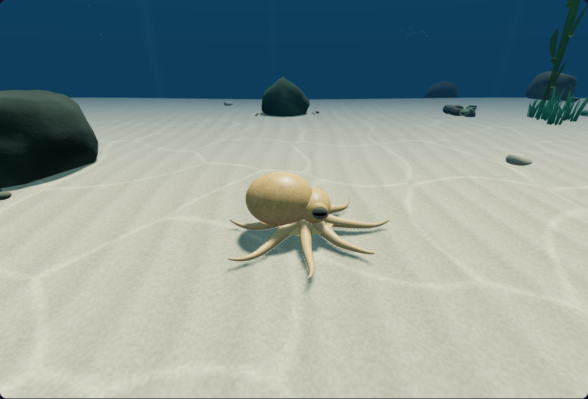
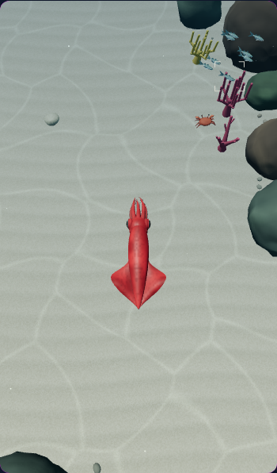

A continuous horizon
Immediate pause · fixed reef camera. The dark band is gone before the simulation takes its first active step.
A smoother surface glow, a steady horizon during paused camera changes, and caustics that disappear cleanly into the distance.

Immediate pause · fixed reef camera. The dark band is gone before the simulation takes its first active step.


After 60 controlled active steps · upward diagnostic camera. The upper gradient is smooth and brightest toward the existing sun direction. Ambient animals can differ between these separate runs.

After 60 controlled active steps · native View control. Sand, rocks and the animal keep their detail. Ambient animals can differ between these separate runs.


Phone · low graphics quality · native View controls after 60 active steps. The same water treatment uses the existing dome.
Four matching camera poses and render counts. The paused reef and phone views also match every world transform; the two active desktop runs contain small differences in ambient animal positions. The changes add no draw calls, geometry, textures, or frame buffers. Verified with 88 targeted CPU checks and five native browser scenarios. Validation details